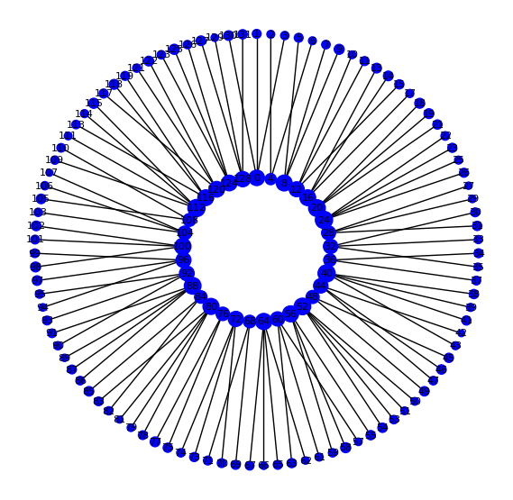
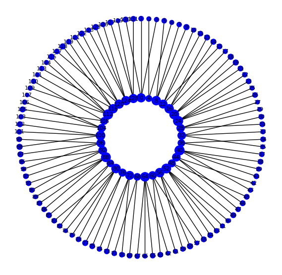

横田 光悦のホームページ
情報をまとめるためにHPを作成しました。
勉強中ですので、随時更新します。
My Works
海洋生物たちの復讐
大学1年次に制作した初めてのゲーム作品です
縦スクロールシューティングゲームで, C言語とDXライブラリを用いました


ボイストラベラー (Voice Traveler)
音声認識と自身の声を周波数に変換して操作する音声アクションゲーム
音声認識はJulius, 周波数変換は, 高速フーリエ変換をゲームエンジンUnityに組み込みました.言語はC#です。


タダノアクション3DXゲーム
3Dゲームを作りたい目的で制作した3Dアクションゲーム
規模がデカすぎて, 制作は一時中断しています
言語はC#で, ゲームエンジンはUnityを使用しています


競技プログラミングのために作成したライブラリ
競プロで頻繁に用いる処理をライブラリにしたものです。言語はC++です。
近日githubに公開します
卒業論文のシミュレーション結果
「ヒューリスティックソルバーによる安定した電力システムの構築と量子アニーリングによる比較」というテーマで研究を行いました.
こちらが先行研究のアルゴリズムにしたがって, 最適化を行った図です.

量子アニーリングを用いて, 最適すると, 右の図のようになります.
 

言語はPythonで, グラフィックライブラリはNetworkXを用いました.